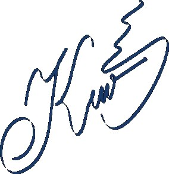

ОМВД России по г. Каменногорску
Следственный отдел
дело ПП-2024-0624
г. Каменногорск · 16.07.2024 г. · свидетель
| Допрос начат в 10:10 | Допрос окончен в 11:15 |
| Фамилия, имя, отчество | Кольцов Артём Викторович |
|---|---|
| Дата рождения | 19.07.2002 (21 год) |
| Место жительства / телефон | г. Каменногорск, ул. Шоссейная, 7 · +7******12-47 |
| Место работы | база турклуба «Скала», инструктор |
| Семейное положение | не женат |

Вопрос: Фамилия, имя, отчество. Где работаете. Где проживаете.
— Кольцов Артём Викторович. Работаю на базе турклуба «Скала». Инструктором. Вожу туристические группы в летний сезон, обучаю туристов выживанию в горах и лесу. У нас летом основной сезон. Живу недалеко от базы, на машине минут пятнадцать ехать.
Вопрос: Ваши отношения с Кирой Беловой.
— Мы встречались. Да, ссорились — в последнее время даже часто. По пустякам, в основном из-за денег и малого внимания, типо что я не заплатил за ей кофе или не вызвал такси. Я уже стал ощущать себя как спонсором. Это начало уже порядком надоедать, так что я хотел уже расстаться с ней.
Вопрос: Вы к кому торевновали?
— Раньше, да, к Селезнёву, тк она иногда часто у него зависала в офисе турклуба. Однажды, у нас с ним чуть до драки не дошло. Не нравится мне он как человек. Я ей так и говорил: «Держись от него подальше».
Вопрос: Где были вечером и ночью 24 июня?
— До 21:30 был в турклубе. Потом пошёл на свидание с Софьей Рыжовой, она как раз заканчивала свою смену. Сняли на базе отдыха «Скала» номер с видом на озеро. Спросите у неё — она подтвердит.
Вопрос: В кармане у Киры была обнаружена записка. Это ваше?
— Нет, я ей ничего не писал.
Вопрос: На месте преступления были обнаружены следы автомобильной резины как у вашей машины?
— Да, походят, но у нас в городе на такой резине половина людей ездит. Я был с Софьей в ту ночь.
Вопрос: Кто, по-вашему, мог это сделать с Кирой?
— Я думаю, что Селезнёв, мутный он чел. Или тот грабитель, кого уже задержали.
Показания с моих слов записаны верно, мною прочитаны. Замечаний к протоколу не имею.